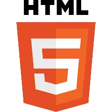
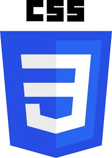
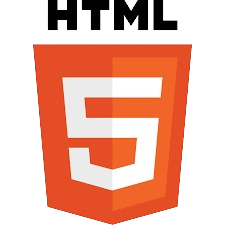
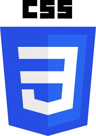
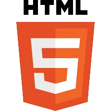
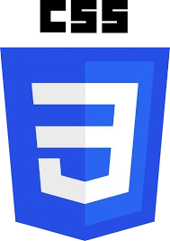

مهاراتي
- C
- C++
- HTML
- CSS
- التعامل مع الكمبيوتر

 



إسلام أصلان، أبلغ من العمر 20 عامًا، شغوف بالألعاب الرقمية وخاصة لعبة فيفا. أحب التكنولوجيا وكل ما يتعلق بعالم الحاسوب، مما دفعني إلى دراسة هندسة الحاسوب في جامعة سوتشو أمام في مرعش، تركيا. أمتلك خبرة في تصليح أجهزة الكمبيوتر وأستمتع بحل المشكلات التقنية، وأطمح إلى تطوير مهاراتي باستمرار في هذا المجال.
Ben İslam Aslan, 20 yaşındayım, dijital oyunlara, özellikle FIFA'ya tutkum var. Teknolojiye ve bilgisayar dünyasına büyük ilgi duymaktayım, bu nedenle Türkiye'de K.Maraş'ta Sütçü İmam Üniversitesi'nde Bilgisayar Mühendisliği Bölümü okumaktayım. Bilgisayar donanımı tamiri konusunda deneyime sahibim, teknik sorunları çözmekten zevk almaktayım ve bu alanda becerilerimi sürekli olarak geliştirmeye çalışmaktayım.
I'm Islam Aslan, a 20-year-old young man, who is passionate about digital games, especially FIFA. I loves technology and everything related to computers, which led me to pursue a degree in Computer Engineering at Sütçü İmam University in K.Maraş, Turkey. I have experience in repairing computers and I enjoy solving technical problems, and I'm constantly striving to enhance my skills in the field.


تواصل معي